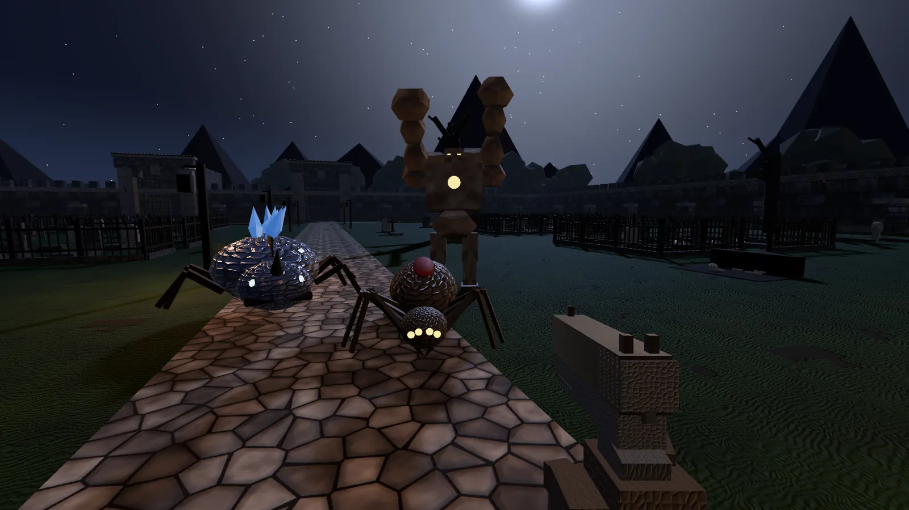
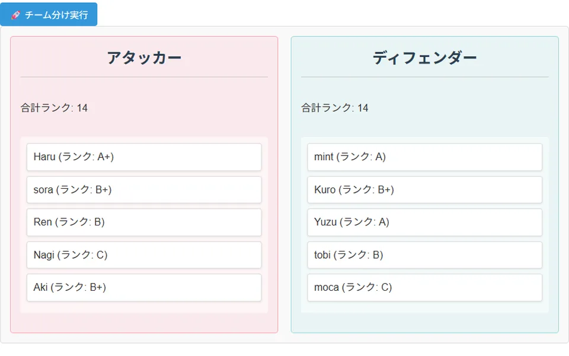
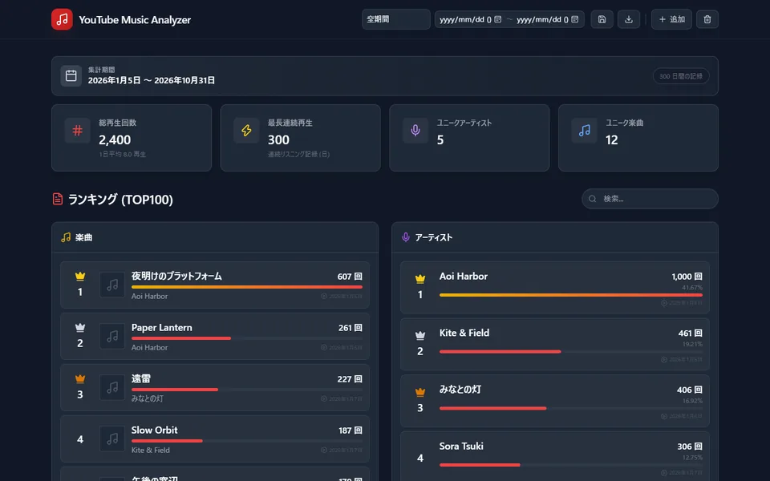
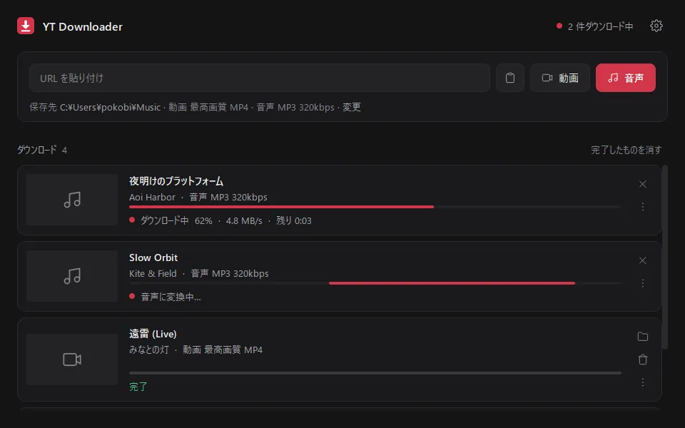

ブラウザ · pokobi.github.io/abyssal-descent  ゲーム ABYSSAL DESCENT深淵降下 ブラウザで遊べる3DのFPSローグライトです。ルートを選びながら深淵を下り、武器やスキルを集めて、各所に待ち構えるボスを倒していきます。 マップ・敵・報酬は毎回ランダムに生成 銃・近接武器・スキル・装備・加護を組み合わせたビルド構築 中断しても途中から再開できる自動セーブ プレイする ソースコード 推奨環境：PC（キーボード＋マウス）、Chrome / Edge
ブラウザ · pokobi.github.io/valorant-team-tool  ツール Valorant チーム分けツール Valorantのカスタムマッチ向けのツールです。プレイヤーのランクをもとに戦力が偏らないようチームを分け、マップもランダムに選択します。 ランクに基づく均等なチーム分け（10人未満でも利用可） ランダムなマップ選択、対象マップの除外設定 結果のテキストコピー、入力内容の自動保存 ツールを開く ソースコード
ブラウザ · pokobi.github.io/YouTube-Music-History-Analyzer  ツール YouTube Music History Analyzer YouTube Musicの再生履歴（Google Takeoutのwatch-history.json）を読み込み、よく聴く曲やアーティストの傾向を集計・グラフ化します。 データはブラウザ内のみで処理（外部へ送信しません） ランキング、期間指定、時間帯別・月別のグラフ 複数ファイルの結合、次回アクセス時の自動復元 ツールを開く ソースコード
Windows アプリ · YT Downloader  ツール YT Downloader Windowsの通知領域に常駐する、動画・音声のダウンローダーです。Chrome拡張機能と連携し、YouTube / YouTube Musicの再生画面から直接保存できます。 動画・音声を選んで保存（形式・画質・音質を設定可） yt-dlp・FFmpegを起動時に自動で最新版へ更新 インストーラー版と、展開するだけで使えるzip版 ダウンロード ソースコード 動作環境：Windows 10 / 11、Chrome